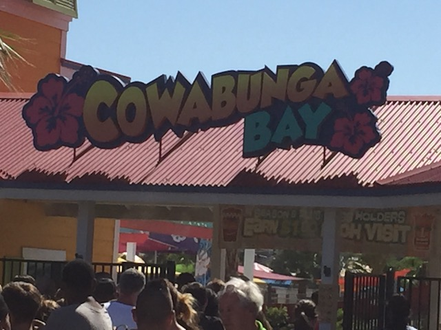
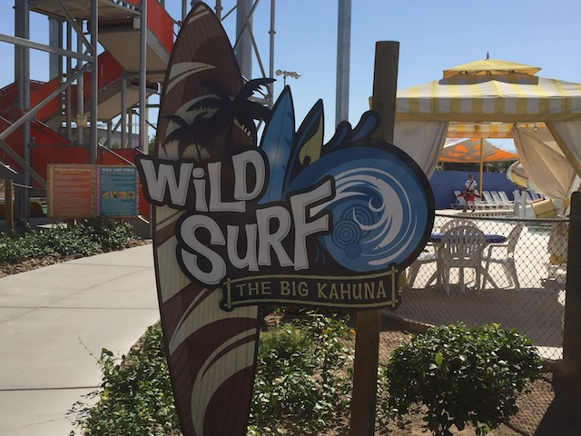

| |
Cowabunga Bay Las Vegas Review

Cowabunga Bay Las Vegas is definately a fun and unique water park. Yeah. It's obviously a lot of fun, since.....let's face it. Most water parks are. But one thing that makes Cowabunga Bay Las Vegas stand out is the fact that....a lot of the slides here are fairly unique. At least in America. Yeah. No slide here is gonna make the Top 10 Water Slides List. But not only are there a lot of fun slides, but some of them are pretty unique. Sure, some of them are only unique in the sense that....Cowabunga Bay uses a slide manufacter that is far more popular in Europe than in America, and uses their versions instead of the more common slides you see from waterslide companies like ProSlide and White Water Landing. But there also is at least one slide which.....I think is pretty unique, not only because of the manufacter, but just because.....I don't think they do slides like that. If so, I haven't seen them. But I'll review that down below with its own slide review. It's just a really fun little water park with some really good slides. And considering how hot it gets in Las Vegas, you bet your ass that this is a great way to both have fun and stay cool in the scorching brutal heat. Plus, it's not that much more expensive than a ride on the actual Casino Coasters in Las Vegas. And....yeah. A day at a water park is unquestionably a better deal than a single ride on El Loco (let alone Manhattan Express).
The Major Waterslides
There is a link to a review of all the Major Waterslides at Cowabunga Bay Las Vegas.
Beach Blanket Banzai Review

Rock-A-Hoola Review

Surf-A-Go Go Review

Surfin' U.S.A. Review

Wild Surf Review

Zuma Zooma Review

All the Other Waterslides
Here are the reviews of all the other water slides at Cowabunga Bay Las Vegas. Honestly, there are only 2 other slides that I did here that aren't reviewed up above. And....basically, all the other slides that are part of the same complex that holds Sur-A-Go Go and Rock-A-Hoola. So let's talk about the other 2 slides that are part of the complex. First off, the blue slide. Point Panic. Yeah. It doesn't look like anything special. But this slide is just a ton of fun. It's got a decent amount of speed, has a lot of laterals, and the ring formation gives some trippy visual effects while sliding down, which makes it seem like you're going really fast. It's just a really fun slide overall. This honestly is one of the better slides here and is not something you should sleep on. The other slide not mentioned is the green slide. Breaker 1-9. It's fun and all. But honestly, kind of mediocre. I mean, the slide is trimmed. That's pretty lame. Not the worst slide ever, but just nothing special at all. Everything else is just kiddy water slides.
Dining
I never ate at Cowabunga Bay Las Vegas.
Theming and Other Attractions
Here are the reviews of all the other stuff at Cowabunga Bay Las Vegas. Well, as for theming, there's not much. Sure, there's a few things here and there. A couple random surfboard themes, and other chill California coastside theming (Feels weird seeing places themed after where you live lol). But for the most part, it's pretty bare. But that's OK. Most water parks aren't exactly well themed. As for other things to do, there's just the standard water park staples. A lazy river and a wave pool. Fun, but nothing too crazy or special.
In Conclusion
Cowabunga Bay Las Vegas is a pretty good water park. I know it's not anything special and that it's not something that really stands out when it comes to water parks. But the selection they have is actually pretty cool. They have a Trap Door, a Tantrum, a Family Raft Slide, and even a Surf Mat Racer with a freaking hump in it. That honestly, is just really freaking cool. I know it's not a water park that really stands out or has some slide that makes coaster enthusiasts flock to it (it is difficult to get those since....we're coaster enthusiasts. Very rarely do water parks break into the coaster enthusiast world). But one thing that really could be interesting is that the owner of the park is actully a coaster enthusiast. No really. I don't know the dude. I've never met him. There is ZERO association between him and Incrediblecoasters. But if he is a coaster enthusiast, then he does have an idea of what the most popular slides are. And hey. He is the owner. He might be able to take some of those ideas and put them in his water park (Yeah yeah. Making a profit and appealing to the general public comes first. I know that). I'm sure he's got some cool stuff planned. So yeah. If you find yourself in Las Vegas, you don't want to destroy your life savings gambling, are tired of overpriced coasters, and want to beat the scorching desert heat, then check out Cowabunga Bay Las Vegas.
Tips
*Do all the major slides here.
*Make sure to check out their Summer Nights Deal. They have a really good discount for the final 3 hours of the park. And it was a GREAT deal. I used it and managed to do EVERYTHING here (at least all the major slides).
*Have Fun!!!
Location
Henderson, Nevada, U.S.A
Last Day Visited
June 5, 2017
I don't have a Cowabunga Bay Las Vegas video as getting water park footage is a nightmare. Especially at a water park like this, it's not happening.
Complete Update List
2017
Silverwood/Lagoon Road Trip
Here's a link to the parks website.
Home
|